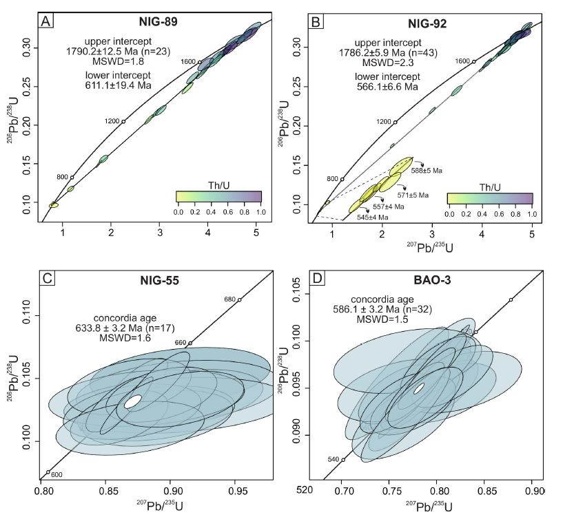

New U-Pb zircon constraints from Nigeria on the Proterozoic evolution of the Wes Gondwana Orogen

Resumo em Português
O complexo de embasamento pré-cambriano nigeriano é um componente chave do Escudo Benino-Nigéria, localizado entre os crátons da África Ocidental e do Congo. Este estudo emprega geocronologia U-Pb em zircão para refinar a cronologia de eventos magmáticos e metamórficos dentro do cinturão de xistos de Ife-Ilesha e complexos granitoides circundantes. Os resultados destacam uma história geológica complexa, incluindo rifteamento estatheriano (ca. 1,78 Ga), magmatismo ediacarano (ca. 633 Ma) associado a processos de subducção e subsequente metamorfismo pan-africano (ca. 590–540 Ma). Os ortognaisses de Ife-Ilesha apresentam idades U-Pb consistentes com um episódio magmático estatheriano generalizado, correlacionando-se com eventos similares tanto no Escudo Tuaregue, ao norte, quanto no sudeste do Brasil, ao sul. Adicionalmente, um metagabro do Complexo Mokuro registra magmatismo pré-colisional durante a subducção neoproterozoica. A datação da borda do zircão revela um metamorfismo pan-africano prolongado, com duração superior a 50 milhões de anos, com evidências de condições persistentes de temperatura ultra-alta, particularmente no norte. A idade de cristalização da charnoquita de Bauchi (ca. 586 milhões de anos) está alinhada com o magmatismo tardio na região. Essas descobertas contribuem para um arcabouço geodinâmico mais refinado, sugerindo que o Escudo Nigeriano sofreu retrabalho tectônico episódico e prolongado, envolvendo rifteamento, magmatismo de arco e deformação sincolisional. Os resultados também têm implicações para a reconstrução da evolução paleogeográfica do Escudo Benino-Nigeriano e suas conexões com outras partes do Gondwana Ocidental.